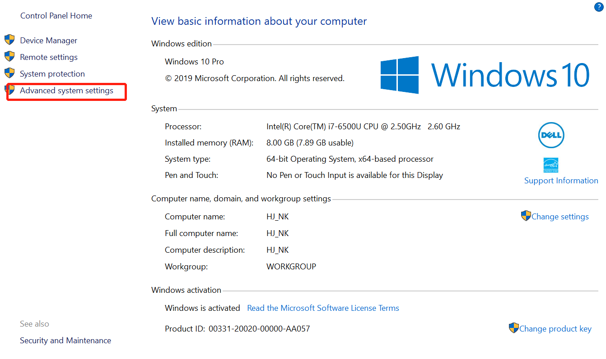

Linux 设置开机自启动 python/bash 脚本 作者: admin 时间: 2019-10-15 分类: Linux 评论 打开 rc.local 文件：vim /etc/init.d/rc.local 在 rc.local 后加入启动命令：sudo python /your/path/script.py & &符号为让脚本后台运行，不在命令行显示结果.
Linux / windows 设置默认 python 版本 作者: admin 时间: 2019-10-15 分类: Linux,python,Windows 评论 windows打开高级系统设置：- 阅读剩余部分 -